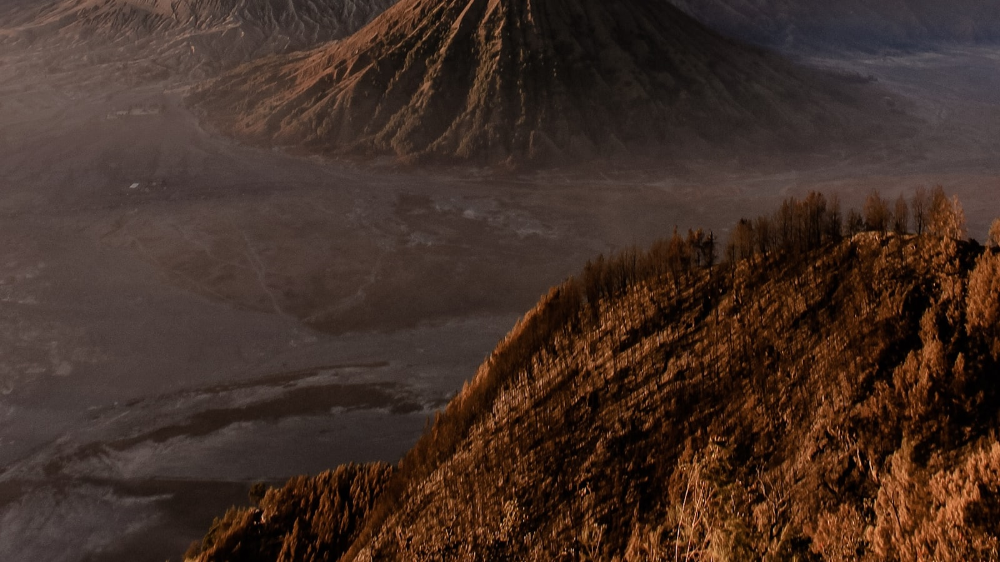
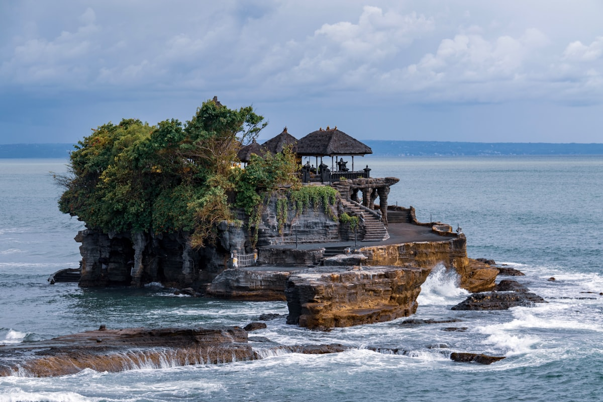
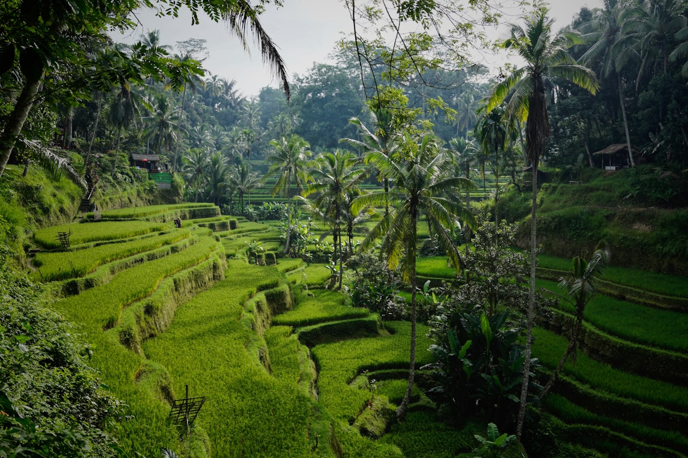
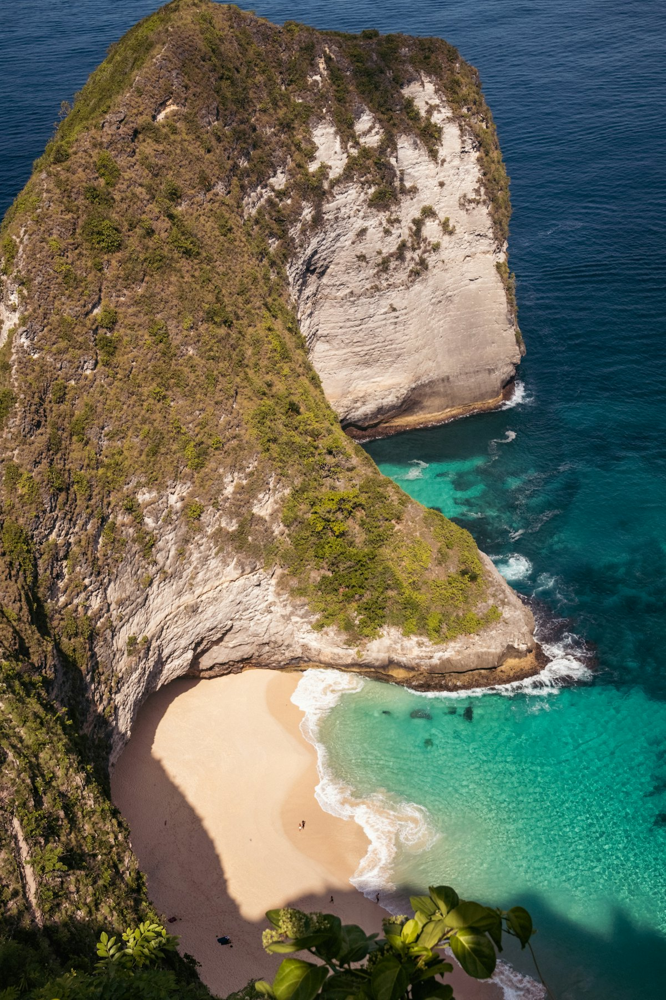
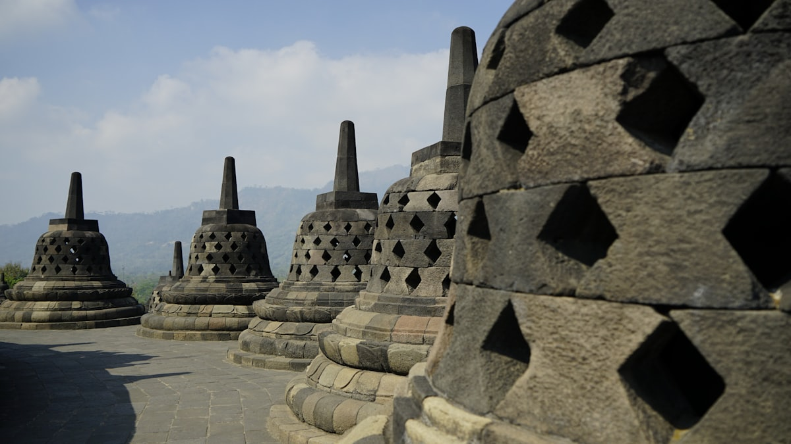
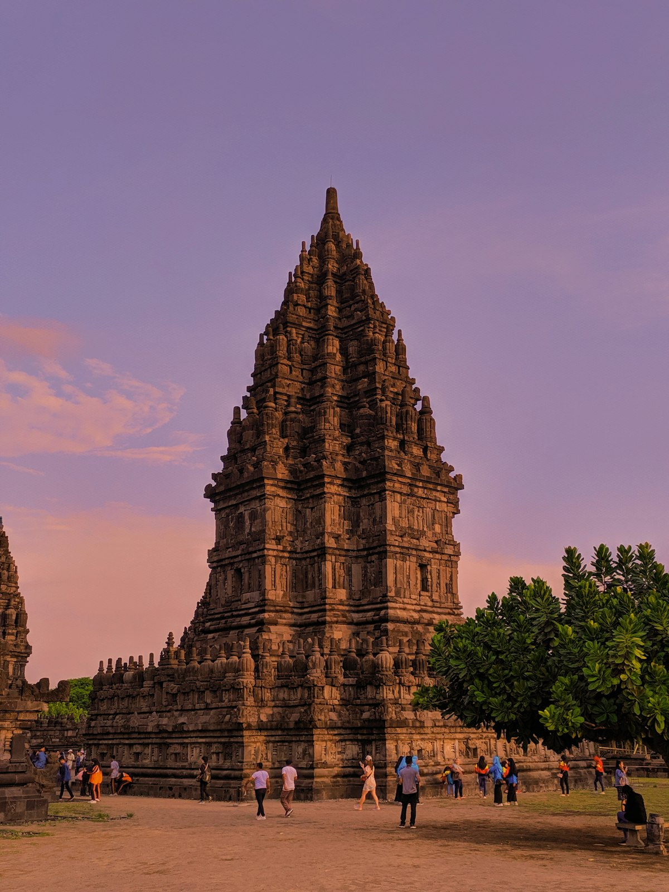
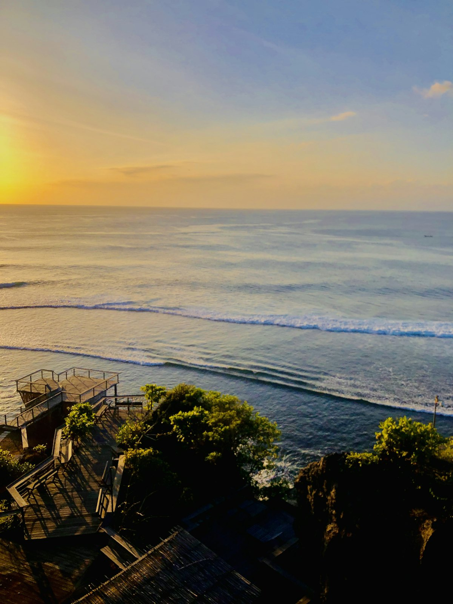
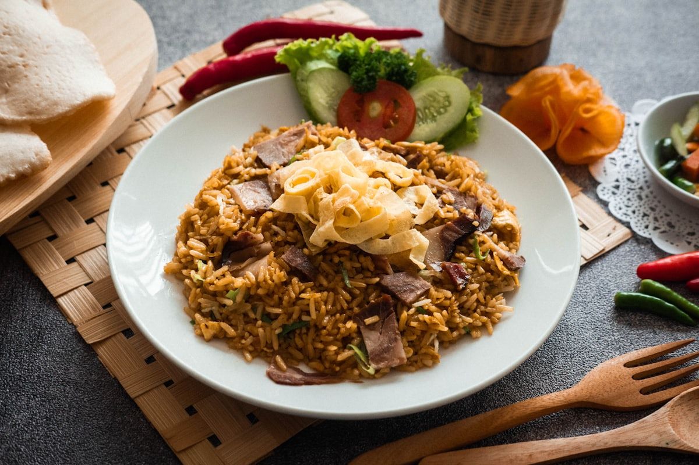

| 事项 | 结论 |
|---|---|
| 事项 | 结论 |
| 签证（关键） | 中国护照落地签（VOA）50 万印尼盾≈35 美元≈230 元，停留 30 天可延一次；提前在线办 e-VOA（Visa/Mastercard 支付，不支持银联） |
| 推荐方案 | 巴厘岛 7 天 + 吉利群岛 2 天 + 日惹 2 天 + 布罗莫火山 2 天 + 雅加达 1 天 + 往返 2 天 |
| 返程约束 | 雅加达⇄北京直飞约 7h；回程订「巴厘岛进 + 雅加达出」的开口程更灵活，旺季提前 1 个月订 |
| 行程链 | 北京 → 巴厘岛 → 吉利群岛 → 日惹 → 布罗莫火山 → 雅加达 |
| 预算（人均） | 经济 8000–12000 ／ 标准 14000–20000 ／ 舒适 28000–40000（人民币，汇率 1 元≈2200 印尼盾） |
| 三件提前事 | ① e-VOA 电子落地签 ② 婆罗浮屠登顶票（官网提前 1–2 周，每日限 1200 人）③ 布罗莫吉普车团提前 3–7 天订 |
| 季节提醒 | 旱季 4–10 月最佳（5–9 月最优）；7–8 月旺季人多价高，避开 12–2 月雨季高峰 |
| 支付 | 印尼盾现金 + GoPay/OVO 电子钱包 + Visa/Mastercard；巴厘岛另收游客征费 15 万盾（与签证分开） |
以下为 16 天 15 晚的推荐节奏：先飞巴厘岛把海岛段玩透，再跳吉利群岛浮潜，然后转战爪哇——日惹看两座世界遗产佛塔，布罗莫火山看星空日出，雅加达收尾返程。每日主景点 ≤2 个，巴厘岛段以包车+摩托车为主，爪哇段以火车+航班衔接。
| 日期 | 行程 | 过夜地 | 主题 |
|---|---|---|---|
| D1 抵巴厘岛 | 北京✈巴厘岛（东航大兴直飞约 7.5h），入境办落地签，宿库塔 | 库塔 | 抵达+预热 |
| D2 | 库塔海滩冲浪初体验 → 海神庙日落 | 库塔 | 海岸日 |
| D3 | 乌布：圣猴森林 → 乌布皇宫/市场 → 圣泉寺洗礼 | 乌布 | 文化日 |
| D4 | 德格拉朗梯田+丛林秋千 → 天空之门（善恶门） | 乌布 | 打卡日 |
| D5 | 佩妮达岛一日：精灵坠崖/天神浴池/破碎海滩 | 乌布 | 跳岛日 |
| D6 | 乌鲁瓦图情人崖 → Kecak 火舞 → 金巴兰海鲜日落 | 金巴兰 | 日落日 |
| D7 | Padang Bai 快船 → 吉利特拉旺岸岛，沙滩小屋 | 吉利T | 转场+沙滩 |
| D8 | 吉利三岛浮潜一日：水下雕像/海龟角/珊瑚花园 | 吉利T | 浮潜日 |
| D9 | 吉利→Padang Bai→巴厘岛✈日惹 | 日惹 | 转场日 |
| D10 | 婆罗浮屠日出（限 100 人）→ 寺内登顶导览 | 日惹 | 佛塔日 |
| D11 | 普兰巴南 + 罗摩衍那舞剧夜场 | 日惹 | 古庙日 |
| D12 | 日惹→泗水（火车 3.5h）→ 宿 Cemoro Lawang 火山村 | 布罗莫山脚 | 火山前夜 |
| D13 | 布罗莫日出：Penanjakan 观景台 → 火山口徒步 → 回泗水 | 泗水 | 火山日 |
| D14 | 泗水✈雅加达：独立广场/老城区/国家博物馆 | 雅加达 | 都会日 |
| D15 返程 | 雅加达市区补货 → 晚班机✈北京 | 航班 | 返程日 |
| D16 到家 | 凌晨抵达北京，16 天行程收官 | — | 收尾 |
以下为 16 天全程的逐小时执行时间线，可当作「当天打开照着走」的清单。标注 ※ 的可选项视体力与天气取舍。
| 时间 | 事项 |
|---|---|
| 16:00–23:30 | 北京大兴✈巴厘岛登巴萨（东航直飞约 7.5h）。出发前 3 天内填好「All Indonesia」入境申报，保存二维码 |
| 23:30–00:30 | 落地办理落地签（若未办 e-VOA），缴巴厘岛游客征费 15 万盾，边检需出示返程机票 |
| 00:30–01:30 | Grab 打车到库塔酒店（约 15–25 万盾），入住休息 |
| 时间 | 事项 |
|---|---|
| 08:30–11:00 | 库塔海滩（免费）：巴厘最热闹的冲浪海滩，报名 2h 冲浪体验课（含教练+装备约 30–45 万盾） |
| 11:30–13:00 | 午餐：Beachwalk 商圈或路边 warung 吃 Nasi Goreng（印尼炒饭）+ 鲜榨果汁 |
| 13:00–15:30 | 库塔街头闲逛：冲浪板一条街、免税店、腿爷们（Legian）夜店区白天很安静 |
| 16:00–18:30 | 海神庙 Tanah Lot（门票约 6 万盾）：海中礁岩上的印度教庙，日落金光洒满庙身，提前 1 小时到占机位 |
| 19:00–20:30 | 海神庙旁餐厅晚餐，回库塔休息 |
| 时间 | 事项 |
|---|---|
| 08:30–10:30 | 乌布圣猴森林（门票约 8 万盾）：百余只长尾猕猴的雨林保护区，小心护好眼镜和随身小物 |
| 11:00–12:30 | 乌布皇宫 + 乌布市场（免费）：逛手工艺品市场，巴厘木雕/银饰可砍价 5 折起 |
| 12:30–14:00 | 午餐：乌布脏鸭餐（Bebek Betutu），配椰子饭和巴厘辣酱 |
| 14:30–17:00 | 圣泉寺 Tirta Empul（门票约 5 万盾）：巴厘最神圣的圣泉庙，可体验「圣泉洗礼」（需穿纱笼、按顺序从第 1 排喷泉开始） |
| 18:00 | 回乌布，晚餐后可选一场巴厘传统舞蹈表演（约 15–20 万盾含茶点） |
| 时间 | 事项 |
|---|---|
| 06:00–07:30 | 早起包车出发天空之门 Lempuyang（距乌布约 1.5h 山路） |
| 08:00–10:00 | 善恶门（门票约 10 万盾）：巴厘最上镜的「天堂之门」，排队拍照约 30–60 分钟，工作人员会帮忙用镜片拍倒影大片 |
| 10:30–12:30 | 回程顺路参观蒂尔塔冈加水皇宫（免费）：皇家浴池+锦鲤池，水清透蓝 |
| 12:30–14:00 | 午餐：回乌布或路上 warung |
| 14:30–17:00 | 德格拉朗梯田（约 2 万盾）：苏巴克灌溉系统世界遗产，青翠梯田 + 丛林秋千（秋千 15–30 万盾） |
| 18:00 | 回乌布，spa 放松可选 |
| 时间 | 事项 |
|---|---|
| 07:00–07:45 | 沙努尔码头乘快船（往返 30 万盾，35 分钟）到佩妮达岛 |
| 08:30–12:00 | 包车游东线：精灵坠崖 Kelingking（T-Rex 悬崖全景）→ 天神浴池 Angel's Billabong（天然无边泳池，禁止下水）→ 破碎海滩 Broken Beach（环形崖洞+蓝宝石海） |
| 12:00–13:00 | 佩妮达岛午餐（warung 简餐），补充水分 |
| 13:30–15:30 | 包车前往水晶湾 Crystal Bay（沙滩休整）或网红秋千点拍照 |
| 16:00–17:00 | 返程快船回沙努尔，回库塔/乌布酒店 |
| 时间 | 事项 |
|---|---|
| 09:00–12:00 | 自由上午：睡到自然醒，或去水明漾海滩俱乐部躺平/做巴厘 spa |
| 12:30–14:00 | 午餐：库塔/水明漾 brunch 或海鲜 |
| 15:00–17:30 | 乌鲁瓦图情人崖 Uluwatu（门票约 5 万盾）：悬崖上的海神庙，巴厘最壮观日落点，猴子要护好帽子墨镜 |
| 17:30–19:00 | Kecak 火舞表演（约 15 万盾）：日落场在悬崖剧场，上百名男声合唱+火舞，巴厘最经典的日落演出 |
| 19:30–21:00 | 金巴兰海滩海鲜烧烤（人均 15–30 万盾）：海边烛光晚餐，现捞海鲜配烤玉米和落日余晖 |
| 时间 | 事项 |
|---|---|
| 08:00–09:30 | 包车/打车从库塔到Padang Bai 码头（约 1.5h） |
| 10:00–11:30 | 乘Blue Water Express 快船到吉利特拉旺岸（约 1.5h，单程约 40 万盾），晕船药提前吃 |
| 11:30–13:00 | 入住沙滩小屋，缴登岛税 3 万盾，岛内禁机动车，全靠自行车和马车 |
| 14:00–17:00 | 租自行车（约 5 万盾/天）环岛：东岸秋千、西岸日落酒吧 |
| 18:00–20:00 | 海边日落+夜市晚餐，吉利 T 岛夜生活丰富 |
| 时间 | 事项 |
|---|---|
| 09:00–12:00 | 参加三岛浮潜团（约 25–40 万盾含装备+玻璃底船）：水下雕像 Nest（鸟巢）、海龟角与海龟同游、鱼之花园珊瑚群 |
| 12:00–13:30 | 吉利美诺岛午餐：沙滩小屋简餐，海水如玻璃般清澈 |
| 14:00–17:00 | 自由安排：吉利 A 岛（安静文艺）或继续浮潜/沙滩秋千/瑜伽课 |
| 18:30 | 吉利 T 岛海边晚餐：海鲜烧烤+日落鸡尾酒 |
| 时间 | 事项 |
|---|---|
| 09:00–10:30 | 快船回 Padang Bai（约 1.5h） |
| 11:00–13:00 | 打车到登巴萨机场，午餐在机场简餐 |
| 14:00–15:35 | 巴厘岛✈日惹（约 1h35m，单程 $66–93≈460–650 元），廉航 Citilink/Lion Air |
| 16:00–17:30 | 入住日惹 Malioboro 大街附近酒店 |
| 18:00–20:00 | 日惹王宫 Kraton（门票约 3 万盾）黄昏场 + Malioboro 夜市吃 Gudeg 榴莲炖鸡饭、沙嗲 |
| 时间 | 事项 |
|---|---|
| 03:30–05:00 | 包车前往婆罗浮屠（车程约 1.5h），持日出票入场（100 万盾，每日限 100 人，提前 2 天官网订） |
| 05:00–07:00 | Manohara 观景台日出：佛塔剪影+默拉皮火山+云海，全程最震撼画面之一；日出后享 Manohara 早餐 |
| 08:30–11:30 | 登顶导览（登顶票 45.5 万盾含导游+凉鞋，每日限 1200 人）：沿回廊看 2600 块浮雕，登顶俯瞰钟形佛塔与田园 |
| 11:30–13:00 | 婆罗浮屠小镇午餐，返日惹 |
| 14:30–17:00 | 可选：默拉皮火山观景台（日出后云雾散开，火山轮廓清晰）或日惹市区补觉 |
| 18:00 | Malioboro 夜市晚餐 |
| 时间 | 事项 |
|---|---|
| 08:30–11:30 | 普兰巴南 Prambanan（门票 40 万盾）：东南亚最大印度教神庙群，主庙湿婆塔高 47m，回廊刻满罗摩衍那浮雕 |
| 11:30–13:00 | 普兰巴南游客区午餐 |
| 13:30–16:00 | 可选：Ratu Boko 王室遗址（联票 67.5 万盾）或回日惹逛水宫 Taman Sari（门票约 3 万盾） |
| 17:00–19:30 | 罗摩衍那露天舞剧（约 20–30 万盾）：旱季 5–10 月每晚开演，佛塔灯光+实景演出，是爪哇文化的高光 |
| 20:00 | 返酒店，日惹夜宵 |
| 时间 | 事项 |
|---|---|
| 08:00–11:30 | 日惹乘火车到泗水（约 3.5h，KAI 国铁一等座约 30 万盾，App「Access by KAI」提前购票） |
| 11:30–13:00 | 泗水午餐，采购布罗莫夜宵干粮 |
| 13:00–17:00 | 包车/拼车前往Cemoro Lawang 火山村（车程 3–4h，拼车约 20–30 万盾/人） |
| 17:30 | 入住火山村旅馆（旺季一床难求，提前 1 周订），缴村维护费 3.5 万盾 |
| 19:00 | 火山村晚餐，21 点前入睡——凌晨 3 点就要出发 |
| 时间 | 事项 |
|---|---|
| 03:00–03:30 | 乘吉普车前往 Penanjakan 观景台（拼车约 50–70 万盾/人含门票外的车费，凌晨出发） |
| 04:30–06:30 | 日出云海：布罗莫+巴托克+塞梅鲁三座火山在云海中苏醒，银河若天气好可见 |
| 07:00–09:30 | 吉普车下沙海，爬 250 级台阶到布罗莫火山口边缘，近距离看硫磺烟雾翻涌 |
| 10:00–11:00 | 回 Cemoro Lawang 早餐（当地玉米汤/方便面），补觉或逛火山村 |
| 12:00–16:00 | 回程泗水（3–4h），泗水市区晚餐 |
| 18:00 | 宿泗水，好好洗个热水澡 |
| 时间 | 事项 |
|---|---|
| 08:00–09:20 | 泗水✈雅加达（约 1h20m，廉航约 40–60 万盾） |
| 10:00–12:00 | 独立广场 Monas（登塔约 2 万盾）：印尼国家地标，塔顶俯瞰雅加达全景 |
| 12:00–13:30 | 午餐：附近商场或街头巴东饭（Nasi Padang，自助称重） |
| 14:00–16:30 | 雅加达老城 Kota Tua：法塔西拉广场+巴达维亚咖啡馆（荷兰殖民建筑群），日落前光线适合拍照 |
| 17:00–20:00 | Grand Indonesia / Plaza Indonesia：雅加达最大商场群，晚餐+补货（印尼手工蜡染、咖啡豆） |
| 时间 | 事项 |
|---|---|
| 08:30–10:30 | 早餐后去国家博物馆（免费，周一二闭馆）或 Istiqlal 清真寺（东南亚最大清真寺，免费进入） |
| 11:00–12:30 | 午餐：老城或商场印尼菜收尾 |
| 13:00–14:00 | 退房，打车去苏加诺-哈达机场（预留 1.5h 车程+3h 值机） |
| 17:00–次日 01:00 | 雅加达✈北京（直飞约 7h，时差 -1h），入境到家 |
| 时间 | 事项 |
|---|---|
| 01:00–02:00 | 抵达北京大兴/首都机场，入境取行李 |
| 02:30 | 回家休息，16 天海岛+火山+佛塔之旅收官 |
必去（必去）/ 顺路（顺路）/ 可跳过（可跳过）。

必去
必去
必去
必去
必去
必去
顺路图片为 Unsplash 主题图（海神庙、德格拉朗梯田、佩妮达、婆罗浮屠、普兰巴南、乌鲁瓦图日落、Nasi Goreng、布罗莫均为印尼实景），用于页面配图。更多免费景点：圣猴森林、圣泉寺、乌布皇宫、蒂尔塔冈加、独立广场、老城法塔西拉广场。
点击左侧节点可在地图上定位；点击地图 marker 会高亮对应节点。坐标为 WGS-84 转 GCJ-02 纠偏后标注。
以下为单人、不含购物的估算，人民币计价；出发地基准北京。汇率按 1 元 ≈ 2200 印尼盾折算，三档预算对应民宿/精品酒店/泳池别墅的住宿差异。往返机票按淡季 3500–6000 元计（转机更省、东航大兴直飞巴厘岛为 2026 年新开航线）。
| 项目 | 经济（8000–12000） | 标准（14000–20000） | 舒适（28000–40000） |
|---|---|---|---|
| 往返机票 | 北京✈巴厘岛转机+雅加达返 3500–4500 | 直飞巴厘岛+雅加达返 4500–6000 | 直飞/灵活时段 8000–12000 |
| 住宿（15 晚） | 民宿/床位 100–200/晚 | 精品酒店 300–600/晚 | 泳池别墅/五星 900–1800/晚 |
| 交通（岛间+境内） | Grab/摩托+快船+火车 1500–2200 | 包车+快船+国内航班 2500–4000 | 全程包车+专车+航班 6000–9000 |
| 门票/活动 | 基础景点约 800–1200 | 含佛塔登顶+浮潜+火山团 2500–3500 | 日出票+私团+SPA 6000–10000 |
| 餐饮（16 天） | warung+街边 2000–3000 | 正常下馆子 4000–6000 | 海鲜大餐+网红餐厅 10000–15000 |
在布罗莫后 +2 天去东爪哇宜珍火山：蓝色火焰+硫磺湖徒步，凌晨 2 点出发、戴防毒面具，体力要求高于布罗莫。时间紧可二选一（推荐布罗莫，观感更稳、配套更成熟）。
带娃或想放松：砍掉天空之门（车程 2h+排队 1h）与佩妮达岛（山路颠簸），巴厘岛多留 1 天给圣猴森林和水明漾海滩俱乐部；布罗莫可改住泗水酒店报「日出一日游」，免去高原村住宿。3 岁以下儿童多数交通免费。
| 方式 | 时长 | 参考价 | 备注 |
|---|---|---|---|
| 直飞巴厘岛（推荐） | 北京⇄巴厘岛约 7.5 小时 | 往返 3500–5500 元 | 东航大兴—登巴萨 2026 年新开，每周 3 班（旺季 5 班） |
| 转机 | 10–14 小时 | 3000–4500 元 | 经吉隆坡（亚航）/广州/新加坡，便宜但费时 |
| 雅加达返程 | 雅加达⇄北京直飞约 7 小时 | 往返 4000–6000 元 | 与巴厘岛进、雅加达出的开口程组合更灵活 |
| 区域 | 价格/晚 | 优点 | 短板 |
|---|---|---|---|
| 库塔/雷吉安 | 经济 100–250 / 标准 400–900 | 沙滩冲浪、夜生活、交通枢纽 | 人多嘈杂，旺季贵 30–40% |
| 乌布 | 经济 80–180 / 标准 300–600 | 丛林稻田、文化寺庙、性价比高 | 距海边 1h+，打车较贵 |
| 金巴兰/乌鲁瓦图 | 标准 600–1500 / 度假村 1500+ | 悬崖海景、日落海鲜烧烤 | 位置偏，餐饮选择少 |
| 吉利特拉旺岸 | 经济 150–300 / 标准 400–800 | 沙滩小屋、无车岛、浮潜方便 | 夜生活热闹；想安静选吉利美诺 |
| 日惹市区（Malioboro） | 经济 150–300 / 标准 350–700 | 去两座佛塔都近、美食夜市多 | 新机场距市区约 1h |
| 雅加达（Sudirman 商圈） | 标准 300–700 / 舒适 800–1500 | CBD 商场地铁便利 | 堵车严重，早晚高峰避开 |